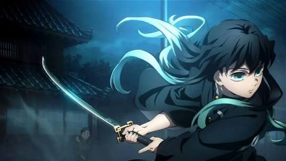
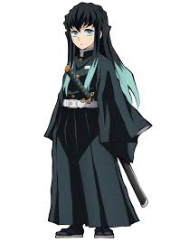
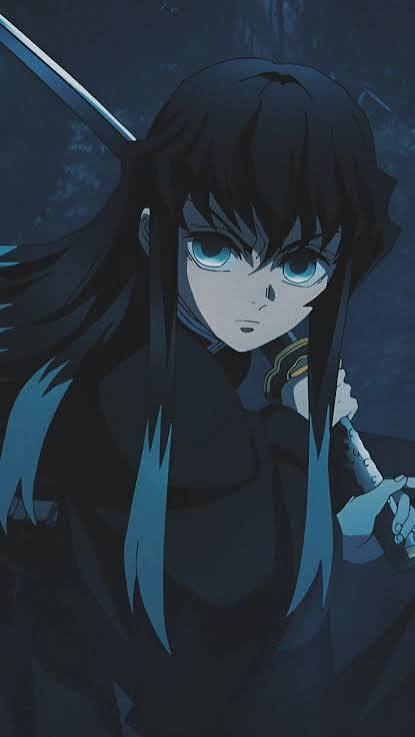

🗡 Tokito Muichiro 🗡



A la eda de 14 años se comvirtio en el Pilar de La Niebla siendo el mas joven en perternecer a ese rango su primera aparicion fue en el capitulo 22 de la primera temporada y de hay aparecio en el arco de la villa de los herreros despertando la marca de cazador
tambien es el decentiente de uno de los creadores de una de las primeras respiraciones de las cuales varian las demas su tatara abuelo es Kokushibo la primera luna superior el cual fue el creador de la respiracion Lunar
- El primer pilar en su generacion en despertar la marca(de hay le siguio Mitsuri)
- Su comida faborita es el Daikon :)
- Cumple años el 8 de Agosto
- Despues de los susesos en la villa de los herreros empezo a recuperar sus recuerdos
- En la batalla comntra su tatara abuelo desperto la abilidad del mundo transparente y la catana roja
- Las timosamente murio a las 14 años a manos de su tatara abuelo